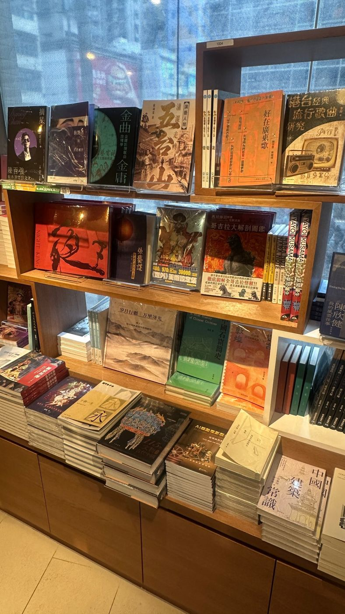
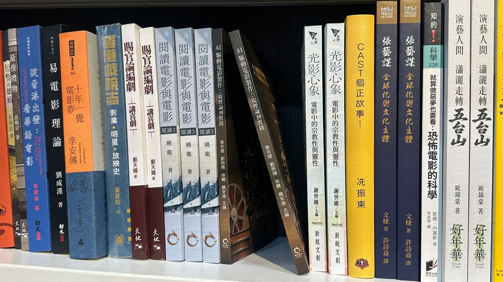
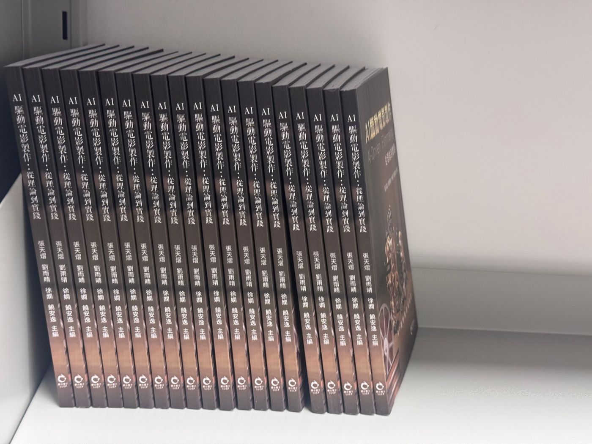

點擊書頁右半部翻到下一頁 · 左半部回到上一頁 · 或使用 ← → 鍵Click the right half to turn forward · left half to go back · or use ← → keys
您已讀完《電影 AI：AI 驅動電影製作》全書八章內容（扉頁、序言、目錄、緒論，到 AI 倫理）。
本線上翻書完整收錄原書第 2–69 頁。
You have reached the end of AI-Driven Filmmaking — all eight chapters, from the title page and preface through to AI Ethics.
This online edition reproduces the book's pages 2–69 in full.
《電影 AI：AI 驅動電影製作》是一本由香港科技大學藝術與機器創造力學部師生共同完成的實踐型讀物。 它不把 AI 寫成一套按一下按鈕就能取代創作者的魔法，而是把鏡頭前真實的猶疑、試探與掙扎攤開來看—— 當工具已能生成像素，人類還剩下什麼？ 全書以八個章節的完整工作流，回答從劇本到分銷的每一個環節該如何與機器人機協同。
編者在序言中寫道，全書所記錄的「是一群創作者在新技術面前的猶豫與試探，以及猶豫之後的立場與選擇」。每一章都從真實的製作現場出發，而非從功能列表出發。
全書提出可操作的視覺工作流，以「從腦海到螢幕」為主軸：
書中反覆回到同一個問題：在算法的縫隙裏，原創性的邊界究竟身在何方？作者提醒讀者——技術會持續迭代，但觀察世界的獨特視角與捕捉靈感的敏銳感知，才是永不褪色的核心競爭力。
第一章從 1896 年盧米埃爾兄弟的《火車進站》講起，串起默片、類型片的黃金年代與數位新浪潮，指出電影史始終與技術演進同頻共振——AI 只是這條長軸上最新的一格。
「這不僅僅是一部冷冰冰的技術手冊，它更像是一張航海圖。書中的每一位探索者，都在用具體的實踐去追問：在算法的縫隙裏，原創性的邊界究竟身在何方？」
AI-Driven Filmmaking is a hands-on volume co-created by faculty and students of the Division of Arts and Machine Creativity, Hong Kong University of Science and Technology. It refuses to frame AI as one-click magic that replaces creators; instead it lays bare the genuine hesitation, experimentation, and struggle in front of the lens — when tools can already generate pixels, what is left for the human? Across eight chapters of complete workflows, the book answers how to collaborate with the machine at every stage, from script to distribution.
In the preface the editors write that the book records "a group of creators' hesitation and probing before a new technology, and the stance and choices they make after the hesitation." Every chapter begins on a real production floor, not a feature checklist.
The book proposes an actionable visual workflow built around "from mind to screen":
The book keeps returning to the same question: in the seams of the algorithm, where lies the boundary of originality? The authors remind readers that technology keeps iterating, but the unique way of observing the world and the keen sensitivity to capture inspiration are the core competitiveness that never fades.
Chapter One opens with the Lumière brothers' "Arrival of a Train" in 1896, threading through the golden age of silent film and genre cinema and the digital new wave, pointing out that film history has always resonated with technological evolution — AI is merely the latest frame on that long axis.
"It is not merely a cold technical manual; it is more like a nautical chart. Every explorer in this book uses concrete practice to ask: in the seams of the algorithm, where exactly lies the boundary of originality?"
《電影 AI：AI 驅動電影製作》由聯合電子出版社出版，現已在書店上架與陳列。以下為實地拍攝，記錄本書走進書店、進入電影與藝術書架，與其他讀物並列的樣子。 Published by Sino United Electronic Publishing, AI-Driven Filmmaking is now on sale and on display in bookshops. The photographs below record the book on the shelf, taking its place among the cinema and art titles it now sits beside.



點擊照片可放大查看Click any photo to enlarge